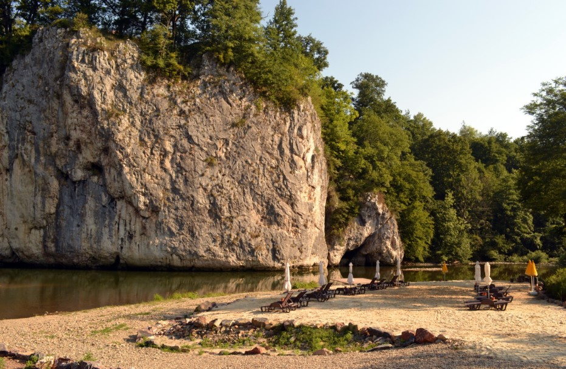

Suncuius
Descriere
Șuncuiuș este satul de reședință al comunei cu același nume din județul Bihor, situat la poalele Munților Pădurea Craiului, pe cursul mijlociu al râului Crișul Repede.
La Șuncuiuș găsim o plajă amenajată în inima Apusenilor, cu nisip fin, sezlonguri ca la mare și un peisaj care te duce cu gândul la o plajă exotică.